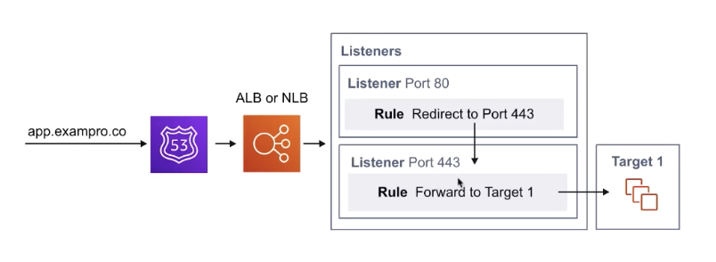

The current note and all other notes titled “AWS SAA Test prep” are based on the 10-hour free tutorial hosted by Andrew Brown and published by freeCodeCamp, which is accessible on YouTube through this link. Special thanks for the maker and publisher of the awesome video!
ELB distributes incoming traffic across multiple targets, such as:
- EC2 instances
- Lambda functions
- Containers (with ALB)
- IP addresses
ELB Rules of Traffic
Listeners
Listen for incoming traffic that match the listener’s port. (For CLB, EC2 instances are directly registered to the Load Balancer)
Listener Rules (For ALB)
Listeners will then invoke rules to decide what to do with the traffic. Generally, the next step is to forward it to a Target Group. It could also redirect to another port.

Target Groups(not available for CLB)
EC2 instances are registered as targets to a Target Group.
ALB
Designed to balance HTTP/HTTPS traffic.
OSI Layer 7
ALB has a feature called Request Routing which allows you to route rules to your listeners based on the HTTP protocol.
Web Application Firewall (WAF) can be attached to ALB.
Great for web applications.
NLB
Designed to balance TCP/UDP traffic.
OSI Layer 4.
Can handle millions of requests per second while still maintaining low latency.
Can perform Cross-Zone Load Balancing
Great for Multiplayer Video games or when network performance is critical.
CLB
legacy service
Can perform Cross-Zone Load Balancing
It will respond a 504 error (timeout) if the underlying application is not responding (at the web-server or database level).
It uses Layer 7-specific features such as sticky sessions
It can also use strict Layer 4 balancing for purely TCP applications.
Sticky Sessions
Sticky Session is an advanced load balancing method that allows you to bind a user’s session to a specific EC2 instance.
Ensures all requests from that session are sent to the same instance.
Typically utilised with a CLB.
Can be enabled for ALB though can only be set on a Target Group not individual EC2 instances.
Cookies are used to remember which EC2 instance.
Useful when specific information is only stored locally on single instance.
X-Forwarded-For (XFF) Header
If you need the IPv4 address of a user, check the X-Forwarded-For header.
The X-Forwarded-For(XFF) header is a command method for identifying the originating IP address of a client connecting to a web server through an HTTP proxy or a load balancer.
ELB-Health Checks
Instances that are monitored by the ELB report back Health Checks as InService or OutofService
Health Checks communicate directly with the instance to determine its state.
ELB does not terminate (kill) unhealthy instance. It will just redirect traffic to unhealthy instances.
For ALB and NLB, Health Checks are found on the Target Group.
For CLB, Health Checks are directly set on the load balancer itself.
The idea is: ping the server at a specific URL, with a specific protocol (HTTP/HTTPS), and expect to get a specific response back.
Cross-Zone Load Balancing
Only for NLB/CLB.
When Cross-Zone Load Balancing is enabled, requests are distributed evenly across instances in all enabled AZs.
When Cross-Zone Load Balancing is disabled, requests are distributed evenly within each AZ.
ALB feature: Request Routing
With ALB, you can apply rules to incoming traffic and then forward or redirect traffic.
Rules can be based on:
- Host header
- HTTP header
- Source IP
- HTTP header method
- Path
- Query string
Summary
ALB has Listeners, Rules and Target Groups.
NLB has Listeners and Target Groups.
CLB has Listeners, and EC2 instances are directly registered as targets to CLB.
Use X-Forwarded-For (XFF) to get original IP of incoming traffic passing through ELB.
You can attach WAF to ALB.
You can enable cross-zone load balancing for CLB or NLB.
You can enable Sticky Sessions for CLB or ALB, cookies are remembered via Cookie.
You can apply Request Routing rules on ALB.
ELBs must have at least two subnets